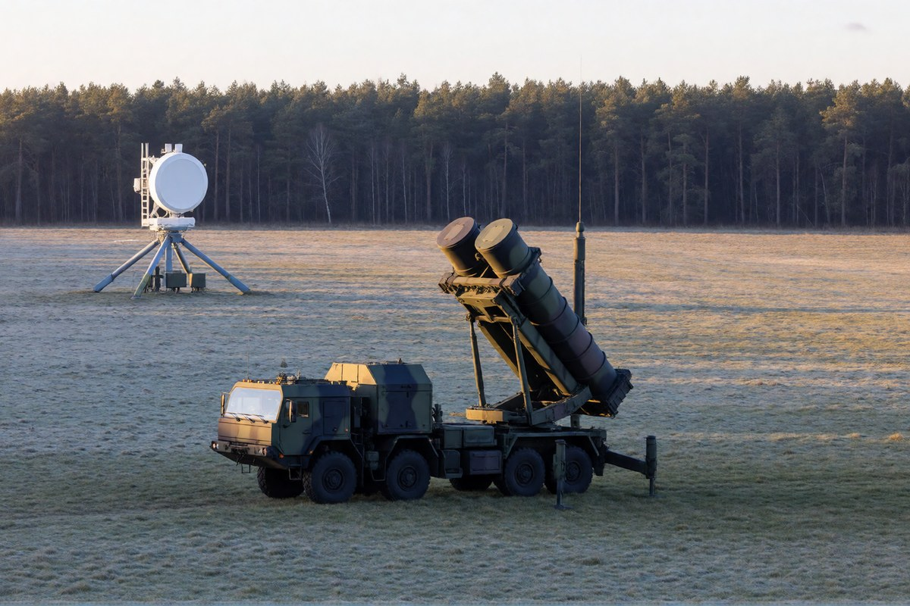

Geopolitica · 16 novembre 2026
«L'Europa è un bersaglio»: l'Iran e lo scudo di Praga

A Gerusalemme Benjamin Netanyahu dice al primo ministro ceco che i missili iraniani non si fermano ai confini di Israele. Andrej Babiš vuole comprare nuove difese antimissile senza aspettare il 2030, e guarda allo scudo israeliano.
di Franco Zanghì
I missili dell'Iran non si fermano ai confini di Israele, e nemmeno il suo terrorismo o le sue ambizioni nucleari. Lo ha detto Benjamin Netanyahu, primo ministro israeliano, ricevendo a Gerusalemme il primo ministro della Repubblica Ceca. L'Europa, è il senso delle sue parole, non è una spettatrice: è un bersaglio.
L'incontro è di lunedì 16 novembre. Lo riferiscono il Jerusalem Post, l'agenzia di stampa ceca e l'emittente israeliana i24News.
Andrej Babiš, il primo ministro ceco, ha portato a casa una posizione netta: vuole comprare altri sistemi di difesa aerea il prima possibile, senza aspettare il 2030, e prima di tutto contro i missili balistici.
La delegazione e l'Arrow 3
La delegazione di Praga ha incontrato i costruttori dell'Arrow 3, lo scudo israeliano contro i missili a lungo raggio, realizzato da Israel Aerospace Industries. Secondo Babiš i sistemi israeliani hanno dato prova di sé in battaglia, a differenza di alcuni sistemi europei.
Non è un'idea isolata. La Germania ha già comprato l'Arrow 3 da Israele, con un contratto che al momento della firma era il più grande nella storia dell'industria militare israeliana.
Praga, intanto, ha già lo Spyder, un sistema israeliano a corto e medio raggio: secondo il Jerusalem Post i quattro sistemi ordinati nel 2021 sono stati consegnati a settembre. Il ministro della Difesa ceco ha detto che il Paese è pronto a firmare entro la fine dell'anno per altri sistemi dello stesso tipo. Poi arriverà una gara per la difesa dai missili balistici.
Perché riguarda anche l'Italia
L'Italia sta sotto lo stesso cielo. Se i missili iraniani possono arrivare in Europa, chi ci protegge e con quali sistemi è una domanda che riguarda anche noi.
E riguarda i soldi. La difesa aerea è una delle voci su cui i governi europei hanno promesso di spendere di più, e ogni contratto firmato con un fornitore extraeuropeo è un pezzo di industria che non cresce in Europa.
Netanyahu ha ricordato che nel 1948 armi e aerei cecoslovacchi aiutarono Israele appena nato, e ha detto a Babiš che ci sono leader deboli che voltano le spalle a Israele mentre lui sta in piedi. Non è una frase sulla difesa aerea: è una frase sull'Europa divisa su Gaza.
Il passaggio da guardare
Letta così, la giornata di Gerusalemme è doppia. Netanyahu parla a un'Europa che lo critica, e lo fa accanto a uno dei pochi leader europei che lo difendono. Ma sui missili l'Europa non ha aspettato lui: i contratti li stanno già firmando Berlino e Praga.
Il passaggio da guardare è la gara ceca per la difesa dai missili balistici. Se la vince un sistema israeliano, Praga segue la strada di Berlino. Se la vince un sistema europeo, sarà il segno che l'Europa vuole difendersi con le sue armi. Nel governo ceco, del resto, c'è già chi preferirebbe un sistema diverso dall'Arrow 3.
Fonti
- Jerusalem Post, la visita del primo ministro ceco a Gerusalemme, 16 novembre 2026
- i24News, «Amid Russia concerns, Czech Republic weighs Israeli air defense deal; Netanyahu says Europe is a target of Iran», 16 novembre 2026
- Defence Industry Europe, «Israel Aerospace Industries presents Arrow 3 missile defence capabilities to Czech Prime Minister Andrej Babiš»
- Ares Difesa, «La Repubblica Ceca vuole rafforzare la difesa aerea con nuovi sistemi missilistici»
- ČTK / České noviny, l'agenzia di stampa ceca, 16 novembre 2026
Le intenzioni di acquisto riferite dal governo ceco erano dichiarazioni politiche alla data di pubblicazione e non contratti firmati; la gara per la difesa dai missili balistici non era ancora stata bandita.